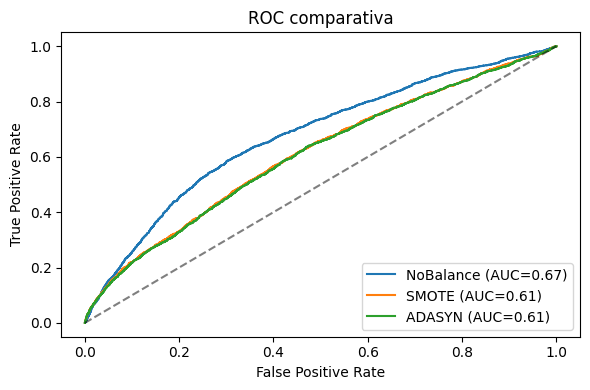

Clasificación Bayesiana#
1.Instalación de Librerías#
# 1) Forzamos la reinstalación de NumPy
!pip install --upgrade --no-cache-dir numpy
# 2) Ahora instalamos versiones compatibles de sklearn e imbalanced-learn
!pip install --upgrade --no-cache-dir scikit-learn imbalanced-learn
Requirement already satisfied: numpy in c:\users\dell\anaconda3\envs\ml_venv\lib\site-packages (1.26.4)
Collecting numpy
Downloading numpy-2.0.2-cp39-cp39-win_amd64.whl.metadata (59 kB)
Downloading numpy-2.0.2-cp39-cp39-win_amd64.whl (15.9 MB)
---------------------------------------- 0.0/15.9 MB ? eta -:--:--
---------- ----------------------------- 4.2/15.9 MB 25.2 MB/s eta 0:00:01
----------------------- ---------------- 9.4/15.9 MB 25.6 MB/s eta 0:00:01
-------------------------------------- - 15.5/15.9 MB 27.1 MB/s eta 0:00:01
---------------------------------------- 15.9/15.9 MB 27.1 MB/s eta 0:00:00
Installing collected packages: numpy
Attempting uninstall: numpy
Found existing installation: numpy 1.26.4
Uninstalling numpy-1.26.4:
Successfully uninstalled numpy-1.26.4
Successfully installed numpy-2.0.2
WARNING: Failed to remove contents in a temporary directory 'C:\Users\DELL\anaconda3\envs\ml_venv\Lib\site-packages\~-mpy.libs'.
You can safely remove it manually.
WARNING: Failed to remove contents in a temporary directory 'C:\Users\DELL\anaconda3\envs\ml_venv\Lib\site-packages\~.mpy'.
You can safely remove it manually.
ERROR: pip's dependency resolver does not currently take into account all the packages that are installed. This behaviour is the source of the following dependency conflicts.
scipy 1.11.2 requires numpy<1.28.0,>=1.21.6, but you have numpy 2.0.2 which is incompatible.
Requirement already satisfied: scikit-learn in c:\users\dell\anaconda3\envs\ml_venv\lib\site-packages (1.2.2)
Collecting scikit-learn
Downloading scikit_learn-1.6.1-cp39-cp39-win_amd64.whl.metadata (15 kB)
Requirement already satisfied: imbalanced-learn in c:\users\dell\anaconda3\envs\ml_venv\lib\site-packages (0.10.1)
Collecting imbalanced-learn
Downloading imbalanced_learn-0.12.4-py3-none-any.whl.metadata (8.3 kB)
Requirement already satisfied: numpy>=1.19.5 in c:\users\dell\anaconda3\envs\ml_venv\lib\site-packages (from scikit-learn) (2.0.2)
Requirement already satisfied: scipy>=1.6.0 in c:\users\dell\anaconda3\envs\ml_venv\lib\site-packages (from scikit-learn) (1.11.2)
Requirement already satisfied: joblib>=1.2.0 in c:\users\dell\anaconda3\envs\ml_venv\lib\site-packages (from scikit-learn) (1.3.2)
Requirement already satisfied: threadpoolctl>=3.1.0 in c:\users\dell\anaconda3\envs\ml_venv\lib\site-packages (from scikit-learn) (3.2.0)
Collecting numpy>=1.19.5 (from scikit-learn)
Downloading numpy-1.26.4-cp39-cp39-win_amd64.whl.metadata (61 kB)
Downloading scikit_learn-1.6.1-cp39-cp39-win_amd64.whl (11.2 MB)
---------------------------------------- 0.0/11.2 MB ? eta -:--:--
--------------- ------------------------ 4.2/11.2 MB 31.5 MB/s eta 0:00:01
--------------------------------------- 11.0/11.2 MB 31.2 MB/s eta 0:00:01
---------------------------------------- 11.2/11.2 MB 29.0 MB/s eta 0:00:00
Downloading imbalanced_learn-0.12.4-py3-none-any.whl (258 kB)
Downloading numpy-1.26.4-cp39-cp39-win_amd64.whl (15.8 MB)
---------------------------------------- 0.0/15.8 MB ? eta -:--:--
-------------------- ------------------- 8.1/15.8 MB 45.7 MB/s eta 0:00:01
---------------------------------------- 15.8/15.8 MB 39.8 MB/s eta 0:00:00
Installing collected packages: numpy, scikit-learn, imbalanced-learn
Attempting uninstall: numpy
Found existing installation: numpy 2.0.2
Uninstalling numpy-2.0.2:
Successfully uninstalled numpy-2.0.2
Attempting uninstall: scikit-learn
Found existing installation: scikit-learn 1.2.2
Uninstalling scikit-learn-1.2.2:
Successfully uninstalled scikit-learn-1.2.2
Attempting uninstall: imbalanced-learn
Found existing installation: imbalanced-learn 0.10.1
Uninstalling imbalanced-learn-0.10.1:
Successfully uninstalled imbalanced-learn-0.10.1
Successfully installed imbalanced-learn-0.12.4 numpy-1.26.4 scikit-learn-1.6.1
WARNING: Failed to remove contents in a temporary directory 'C:\Users\DELL\anaconda3\envs\ml_venv\Lib\site-packages\sklearn\~libs'.
You can safely remove it manually.
WARNING: Failed to remove contents in a temporary directory 'C:\Users\DELL\AppData\Local\Temp\pip-uninstall-za0ydpbo'.
You can safely remove it manually.
WARNING: Failed to remove contents in a temporary directory 'C:\Users\DELL\AppData\Local\Temp\pip-uninstall-2wn0v7yv'.
You can safely remove it manually.
ERROR: pip's dependency resolver does not currently take into account all the packages that are installed. This behaviour is the source of the following dependency conflicts.
scikeras 0.13.0 requires keras>=3.2.0, but you have keras 2.10.0 which is incompatible.
!pip install scikit-learn==1.2.2 imbalanced-learn==0.10.1
Collecting scikit-learn==1.2.2
Using cached scikit_learn-1.2.2-cp39-cp39-win_amd64.whl.metadata (11 kB)
Collecting imbalanced-learn==0.10.1
Using cached imbalanced_learn-0.10.1-py3-none-any.whl.metadata (8.2 kB)
Requirement already satisfied: numpy>=1.17.3 in c:\users\dell\anaconda3\envs\ml_venv\lib\site-packages (from scikit-learn==1.2.2) (1.26.4)
Requirement already satisfied: scipy>=1.3.2 in c:\users\dell\anaconda3\envs\ml_venv\lib\site-packages (from scikit-learn==1.2.2) (1.11.2)
Requirement already satisfied: joblib>=1.1.1 in c:\users\dell\anaconda3\envs\ml_venv\lib\site-packages (from scikit-learn==1.2.2) (1.3.2)
Requirement already satisfied: threadpoolctl>=2.0.0 in c:\users\dell\anaconda3\envs\ml_venv\lib\site-packages (from scikit-learn==1.2.2) (3.2.0)
Using cached scikit_learn-1.2.2-cp39-cp39-win_amd64.whl (8.4 MB)
Using cached imbalanced_learn-0.10.1-py3-none-any.whl (226 kB)
Installing collected packages: scikit-learn, imbalanced-learn
Attempting uninstall: scikit-learn
Found existing installation: scikit-learn 1.6.1
Uninstalling scikit-learn-1.6.1:
Successfully uninstalled scikit-learn-1.6.1
Attempting uninstall: imbalanced-learn
Found existing installation: imbalanced-learn 0.12.4
Uninstalling imbalanced-learn-0.12.4:
Successfully uninstalled imbalanced-learn-0.12.4
Successfully installed imbalanced-learn-0.10.1 scikit-learn-1.2.2
ERROR: pip's dependency resolver does not currently take into account all the packages that are installed. This behaviour is the source of the following dependency conflicts.
scikeras 0.13.0 requires keras>=3.2.0, but you have keras 2.10.0 which is incompatible.
scikeras 0.13.0 requires scikit-learn>=1.4.2, but you have scikit-learn 1.2.2 which is incompatible.
!pip install mlxtend==0.22.0
Requirement already satisfied: mlxtend==0.22.0 in c:\users\dell\anaconda3\envs\ml_venv\lib\site-packages (0.22.0)
Requirement already satisfied: scipy>=1.2.1 in c:\users\dell\anaconda3\envs\ml_venv\lib\site-packages (from mlxtend==0.22.0) (1.11.2)
Requirement already satisfied: numpy>=1.16.2 in c:\users\dell\anaconda3\envs\ml_venv\lib\site-packages (from mlxtend==0.22.0) (1.26.4)
Requirement already satisfied: pandas>=0.24.2 in c:\users\dell\anaconda3\envs\ml_venv\lib\site-packages (from mlxtend==0.22.0) (2.2.3)
Requirement already satisfied: scikit-learn>=1.0.2 in c:\users\dell\anaconda3\envs\ml_venv\lib\site-packages (from mlxtend==0.22.0) (1.2.2)
Requirement already satisfied: matplotlib>=3.0.0 in c:\users\dell\anaconda3\envs\ml_venv\lib\site-packages (from mlxtend==0.22.0) (3.7.2)
Requirement already satisfied: joblib>=0.13.2 in c:\users\dell\anaconda3\envs\ml_venv\lib\site-packages (from mlxtend==0.22.0) (1.3.2)
Requirement already satisfied: setuptools in c:\users\dell\anaconda3\envs\ml_venv\lib\site-packages (from mlxtend==0.22.0) (75.8.0)
Requirement already satisfied: contourpy>=1.0.1 in c:\users\dell\anaconda3\envs\ml_venv\lib\site-packages (from matplotlib>=3.0.0->mlxtend==0.22.0) (1.1.0)
Requirement already satisfied: cycler>=0.10 in c:\users\dell\anaconda3\envs\ml_venv\lib\site-packages (from matplotlib>=3.0.0->mlxtend==0.22.0) (0.11.0)
Requirement already satisfied: fonttools>=4.22.0 in c:\users\dell\anaconda3\envs\ml_venv\lib\site-packages (from matplotlib>=3.0.0->mlxtend==0.22.0) (4.42.1)
Requirement already satisfied: kiwisolver>=1.0.1 in c:\users\dell\anaconda3\envs\ml_venv\lib\site-packages (from matplotlib>=3.0.0->mlxtend==0.22.0) (1.4.5)
Requirement already satisfied: packaging>=20.0 in c:\users\dell\anaconda3\envs\ml_venv\lib\site-packages (from matplotlib>=3.0.0->mlxtend==0.22.0) (23.1)
Requirement already satisfied: pillow>=6.2.0 in c:\users\dell\anaconda3\envs\ml_venv\lib\site-packages (from matplotlib>=3.0.0->mlxtend==0.22.0) (10.0.0)
Requirement already satisfied: pyparsing<3.1,>=2.3.1 in c:\users\dell\anaconda3\envs\ml_venv\lib\site-packages (from matplotlib>=3.0.0->mlxtend==0.22.0) (3.0.9)
Requirement already satisfied: python-dateutil>=2.7 in c:\users\dell\anaconda3\envs\ml_venv\lib\site-packages (from matplotlib>=3.0.0->mlxtend==0.22.0) (2.8.2)
Requirement already satisfied: importlib-resources>=3.2.0 in c:\users\dell\anaconda3\envs\ml_venv\lib\site-packages (from matplotlib>=3.0.0->mlxtend==0.22.0) (6.0.1)
Requirement already satisfied: pytz>=2020.1 in c:\users\dell\anaconda3\envs\ml_venv\lib\site-packages (from pandas>=0.24.2->mlxtend==0.22.0) (2023.3)
Requirement already satisfied: tzdata>=2022.7 in c:\users\dell\anaconda3\envs\ml_venv\lib\site-packages (from pandas>=0.24.2->mlxtend==0.22.0) (2023.3)
Requirement already satisfied: threadpoolctl>=2.0.0 in c:\users\dell\anaconda3\envs\ml_venv\lib\site-packages (from scikit-learn>=1.0.2->mlxtend==0.22.0) (3.2.0)
Requirement already satisfied: zipp>=3.1.0 in c:\users\dell\anaconda3\envs\ml_venv\lib\site-packages (from importlib-resources>=3.2.0->matplotlib>=3.0.0->mlxtend==0.22.0) (3.16.2)
Requirement already satisfied: six>=1.5 in c:\users\dell\anaconda3\envs\ml_venv\lib\site-packages (from python-dateutil>=2.7->matplotlib>=3.0.0->mlxtend==0.22.0) (1.16.0)
2. Imports globales#
from sklearn.pipeline import Pipeline as SKPipeline
from imblearn.pipeline import Pipeline as ImbPipeline
# 0. Librerías
import pandas as pd
import numpy as np
import time
import joblib
from copy import deepcopy
from sklearn.pipeline import Pipeline as SKPipeline
from imblearn.pipeline import Pipeline as ImbPipeline
from sklearn.compose import ColumnTransformer
from sklearn.preprocessing import StandardScaler, MinMaxScaler, OneHotEncoder
from sklearn.model_selection import train_test_split, StratifiedKFold, GridSearchCV
from sklearn.metrics import recall_score, roc_auc_score, make_scorer
from sklearn.naive_bayes import (
GaussianNB, MultinomialNB,
BernoulliNB, ComplementNB,
CategoricalNB
)
from imblearn.over_sampling import SMOTE, ADASYN
3.Carga y División de Datos#
df = pd.read_csv(r"C:\Users\DELL\Desktop\Aprendizaje_de_Maquina\credit_risk_the_end.csv")
print("Dimensiones del dataset:", df.shape)
features_dummies = [c for c in df if df[c].nunique()==2 and c!='incumplimiento_credito']
variables_cat = [c for c in df if df[c].dtype=='object']
variables_num = [
c for c in df
if df[c].dtype in ['int64','float64']
and c not in features_dummies + ['incumplimiento_credito']
]
X = df[variables_cat + features_dummies + variables_num]
y = df['incumplimiento_credito']
X_train, X_test, y_train, y_test = train_test_split(
X, y, test_size=0.3, random_state=42, stratify=y
)
Dimensiones del dataset: (78441, 54)
4.Definición de preprocessores#
# 3. Definición del Preprocesador
preprocessor_gauss = ColumnTransformer([
('num', StandardScaler(), variables_num),
('cat', OneHotEncoder(drop='first', sparse_output=False), variables_cat)
], remainder='passthrough')
preprocessor_multi = ColumnTransformer([
('num', MinMaxScaler(), variables_num),
('cat', OneHotEncoder(drop='first', sparse_output=False), variables_cat)
], remainder='passthrough')
5. Pipelines base y balanceados#
from imblearn.over_sampling import SMOTE, ADASYN
# 3. Pipelines base y balanceados
base_pipe = SKPipeline([
('pre', preprocessor_gauss),
('clf', GaussianNB())
])
pipelines_balance = {
'NoBalance': SKPipeline(deepcopy(base_pipe.steps))
}
for name, sampler in [
('SMOTE', SMOTE(random_state=42)),
('ADASYN', ADASYN(random_state=42))
]:
steps = (
deepcopy(base_pipe.steps[:-1]) # todo menos el clasificador
+ [('oversamp', sampler)] # inserta el sobremuestreo
+ [base_pipe.steps[-1]] # vuelve a poner el clasificador
)
pipelines_balance[name] = ImbPipeline(steps)
6.Scorer#
from sklearn.metrics import recall_score, make_scorer
# único métrico que usaremos de ahora en adelante
recall_scorer = make_scorer(recall_score, pos_label=1)
7.GridSearchCV#
cv = StratifiedKFold(n_splits=2, shuffle=True, random_state=42)
pipeline_grid = SKPipeline([
('preprocessor', preprocessor_gauss),
('classifier', GaussianNB())
])
param_grid = [
# --- GaussianNB ---
{
'preprocessor': [preprocessor_gauss],
'classifier': [GaussianNB()],
'classifier__var_smoothing': np.logspace(-15, -1, 30),
'classifier__priors': [None,
[0.99,0.01],
[0.95,0.05],
[0.9,0.1],
[0.8,0.2]]
},
# --- MultinomialNB ---
{
'preprocessor': [preprocessor_multi],
'classifier': [MultinomialNB()],
'classifier__alpha': np.linspace(0.0, 5.0, 25),
'classifier__fit_prior': [True, False],
'classifier__class_prior': [None,
[0.99,0.01],
[0.9,0.1],
[0.8,0.2]]
},
# --- BernoulliNB ---
{
'preprocessor': [preprocessor_multi],
'classifier': [BernoulliNB()],
'classifier__alpha': np.linspace(0.0, 5.0, 25),
'classifier__binarize': np.linspace(0.0, 1.0, 10),
'classifier__fit_prior': [True, False]
},
# --- ComplementNB ---
{
'preprocessor': [preprocessor_multi],
'classifier': [ComplementNB()],
'classifier__alpha': np.linspace(0.0, 5.0, 25),
'classifier__norm': [True, False]
},
# --- CategoricalNB ---
{
'preprocessor': [preprocessor_multi], # CategoricalNB no admite negativos
'classifier': [CategoricalNB()],
'classifier__alpha': np.linspace(0.0, 5.0, 25),
'classifier__fit_prior': [True, False],
'classifier__class_prior': [None,
[0.99,0.01],
[0.9,0.1],
[0.8,0.2]]
}
]
grid = GridSearchCV(
estimator = pipeline_grid,
param_grid = param_grid,
scoring = recall_scorer,
cv = StratifiedKFold(2, shuffle=True, random_state=42),
n_jobs = -1,
verbose = 2,
error_score = np.nan,
return_train_score = True
)
grid.fit(X_train, y_train)
grid.fit(X_train, y_train)
print("→ Mejor combined score (CV):", grid.best_score_)
print("→ Hiperparámetros óptimos:", grid.best_params_)
best_pipe = grid.best_estimator_
Fitting 2 folds for each of 1100 candidates, totalling 2200 fits
c:\Users\DELL\anaconda3\envs\ml_venv\lib\site-packages\sklearn\model_selection\_search.py:952: UserWarning: One or more of the test scores are non-finite: [0.97251202 0.96952913 0.96633311 ... nan nan nan]
warnings.warn(
c:\Users\DELL\anaconda3\envs\ml_venv\lib\site-packages\sklearn\naive_bayes.py:629: FutureWarning: The default value for `force_alpha` will change to `True` in 1.4. To suppress this warning, manually set the value of `force_alpha`.
warnings.warn(
c:\Users\DELL\anaconda3\envs\ml_venv\lib\site-packages\sklearn\naive_bayes.py:635: UserWarning: alpha too small will result in numeric errors, setting alpha = 1.0e-10. Use `force_alpha=True` to keep alpha unchanged.
warnings.warn(
Fitting 2 folds for each of 1100 candidates, totalling 2200 fits
c:\Users\DELL\anaconda3\envs\ml_venv\lib\site-packages\sklearn\model_selection\_search.py:952: UserWarning: One or more of the test scores are non-finite: [0.97251202 0.96952913 0.96633311 ... nan nan nan]
warnings.warn(
→ Mejor combined score (CV): 1.0
→ Hiperparámetros óptimos: {'classifier': ComplementNB(alpha=0.0, norm=True), 'classifier__alpha': 0.0, 'classifier__norm': True, 'preprocessor': ColumnTransformer(remainder='passthrough',
transformers=[('num', MinMaxScaler(),
['ingreso_total', 'cuota_periodica',
'poblacion_relativa_region',
'dias_desde_nacimiento',
'dias_desde_registro',
'dias_desde_emision_id',
'numero_miembros_familia', 'fuente_externa_2',
'fuente_externa_3', 'consultas_buro_anio',
'entradas_buro', 'tipos_credito_activo',
'suma_total_cr...
'monto_total_credito', 'cuentas_pos_cash',
'promedio_meses_saldo', 'total_cuotas',
'total_pagado',
'promedio_dias_entre_registro_y_pago']),
('cat',
OneHotEncoder(drop='first',
sparse_output=False),
['numero_hijos', 'acompanantes_solicitud',
'tipo_ingreso', 'nivel_educativo',
'estado_civil', 'tipo_vivienda', 'ocupacion',
'dia_solicitud', 'hora_solicitud',
'tipo_organizacion'])])}
c:\Users\DELL\anaconda3\envs\ml_venv\lib\site-packages\sklearn\naive_bayes.py:629: FutureWarning: The default value for `force_alpha` will change to `True` in 1.4. To suppress this warning, manually set the value of `force_alpha`.
warnings.warn(
c:\Users\DELL\anaconda3\envs\ml_venv\lib\site-packages\sklearn\naive_bayes.py:635: UserWarning: alpha too small will result in numeric errors, setting alpha = 1.0e-10. Use `force_alpha=True` to keep alpha unchanged.
warnings.warn(
8.Función de Entrenamiento Incremental (partial_fit)#
def entrenar_incremental(pipe, X_tr, y_tr, batch_size=1000, method=None):
"""
Entrena por partial_fit el clasificador de un pipeline (SK o Imb),
reajustando el preprocesador y reentrenando en minibatches (con SMOTE/ADASYN si method lo pide).
"""
# 1) Detectar nombre de preprocesador y clasificador en el pipeline
if 'preprocessor' in pipe.named_steps:
pre_name = 'preprocessor'
elif 'pre' in pipe.named_steps:
pre_name = 'pre'
else:
raise KeyError("No encuentro el paso de preprocesado en el pipeline")
if 'classifier' in pipe.named_steps:
clf_name = 'classifier'
elif 'clf' in pipe.named_steps:
clf_name = 'clf'
else:
raise KeyError("No encuentro el clasificador en el pipeline")
oversamp_name = 'oversamp' # así lo nombraste al construir pipelines_balance
# 2) Fit del preprocesador completo
pre = pipe.named_steps[pre_name]
pre.fit(X_tr)
Xp = pre.transform(X_tr)
# 3) Extraer el clasificador y las clases
clf = pipe.named_steps[clf_name]
classes = np.unique(y_tr)
# 4) Recorrer minibatches
for i in range(0, len(y_tr), batch_size):
Xb = Xp[i:i+batch_size]
yb = y_tr.iloc[i:i+batch_size]
# 4a) Si toca SMOTE/ADASYN, sobremuestrear
if method in ('smote','adasyn'):
Xb, yb = pipe.named_steps[oversamp_name].fit_resample(Xb, yb)
# 4b) Primer partial_fit con clases y pesos si class_weight
if i == 0:
sw = None
if method == 'classweight':
# ejemplo de pesos; adáptalo si los quieres distintos
sw = yb.map({0: len(y_tr)/(2*sum(y_tr==0)),
1: len(y_tr)/(2*sum(y_tr==1))}).to_numpy()
clf.partial_fit(Xb, yb, classes=classes, sample_weight=sw)
else:
clf.partial_fit(Xb, yb)
# 5) Reasignar el clasificador entrenado y devolver pipeline
pipe.named_steps[clf_name] = clf
return pipe
9.Función de Evaluación con Gráficas#
import pandas as pd
import seaborn as sns
import matplotlib.pyplot as plt
from sklearn.metrics import (
roc_curve,
roc_auc_score,
precision_recall_curve,
average_precision_score,
precision_score,
recall_score,
accuracy_score,
f1_score
)
from IPython.display import display
def evaluar_modelo(pipe, X_te, y_te, tag='NB'):
y_pred = pipe.predict(X_te)
y_prob = pipe.predict_proba(X_te)[:,1]
print(f"\n=== {tag} ===")
print("y_test dist:", y_te.value_counts(normalize=True).to_dict())
print("y_pred dist:", pd.Series(y_pred).value_counts(normalize=True).to_dict())
# 1) Matriz de Confusión
cm = pd.crosstab(y_te, y_pred, rownames=['Actual'], colnames=['Pred'])
sns.heatmap(cm, annot=True, fmt='d', cmap='Blues'); plt.title(f"CM {tag}"); plt.show()
# 2) Curva ROC
fpr, tpr, _ = roc_curve(y_te, y_prob)
plt.plot(fpr, tpr, label=f"AUC={roc_auc_score(y_te,y_prob):.2f}")
plt.plot([0,1],[0,1],'k--'); plt.title(f"ROC {tag}"); plt.legend(); plt.show()
# 3) Curva Precision–Recall
prec, rec, _ = precision_recall_curve(y_te, y_prob)
plt.plot(rec, prec, label=f"AP={average_precision_score(y_te,y_prob):.2f}")
plt.title(f"PR {tag}"); plt.legend(); plt.show()
# 4) Histograma de probabilidades
plt.hist(y_prob, bins=20, edgecolor='black')
plt.title(f"P(Y=1) dist ({tag})"); plt.show()
# 5) Métricas numéricas
metrics = {
'precision': precision_score(y_te, y_pred, zero_division=0),
'recall': recall_score(y_te, y_pred, zero_division=0),
'accuracy': accuracy_score(y_te, y_pred),
'f1': f1_score(y_te, y_pred, zero_division=0),
'auc': roc_auc_score(y_te, y_prob)
}
display(pd.DataFrame([metrics], index=[tag]).style.format("{:.4f}"))
return metrics
10.Partial‑fit + evaluación “Partial_Final”#
best_pipe_inc = ImbPipeline(best_pipe.steps)
t0 = time.time()
entrenar_incremental(best_pipe_inc, X_train, y_train,
batch_size=1000, method=None)
print(f"Partial fit en: {time.time()-t0:.2f} seg")
# Evaluación final del modelo incremental
_ = evaluar_modelo(best_pipe_inc, X_test, y_test, tag='Partial_Final')
c:\Users\DELL\anaconda3\envs\ml_venv\lib\site-packages\sklearn\naive_bayes.py:629: FutureWarning: The default value for `force_alpha` will change to `True` in 1.4. To suppress this warning, manually set the value of `force_alpha`.
warnings.warn(
c:\Users\DELL\anaconda3\envs\ml_venv\lib\site-packages\sklearn\naive_bayes.py:635: UserWarning: alpha too small will result in numeric errors, setting alpha = 1.0e-10. Use `force_alpha=True` to keep alpha unchanged.
warnings.warn(
c:\Users\DELL\anaconda3\envs\ml_venv\lib\site-packages\sklearn\naive_bayes.py:629: FutureWarning: The default value for `force_alpha` will change to `True` in 1.4. To suppress this warning, manually set the value of `force_alpha`.
warnings.warn(
c:\Users\DELL\anaconda3\envs\ml_venv\lib\site-packages\sklearn\naive_bayes.py:635: UserWarning: alpha too small will result in numeric errors, setting alpha = 1.0e-10. Use `force_alpha=True` to keep alpha unchanged.
warnings.warn(
c:\Users\DELL\anaconda3\envs\ml_venv\lib\site-packages\sklearn\naive_bayes.py:629: FutureWarning: The default value for `force_alpha` will change to `True` in 1.4. To suppress this warning, manually set the value of `force_alpha`.
warnings.warn(
c:\Users\DELL\anaconda3\envs\ml_venv\lib\site-packages\sklearn\naive_bayes.py:635: UserWarning: alpha too small will result in numeric errors, setting alpha = 1.0e-10. Use `force_alpha=True` to keep alpha unchanged.
warnings.warn(
c:\Users\DELL\anaconda3\envs\ml_venv\lib\site-packages\sklearn\naive_bayes.py:629: FutureWarning: The default value for `force_alpha` will change to `True` in 1.4. To suppress this warning, manually set the value of `force_alpha`.
warnings.warn(
c:\Users\DELL\anaconda3\envs\ml_venv\lib\site-packages\sklearn\naive_bayes.py:635: UserWarning: alpha too small will result in numeric errors, setting alpha = 1.0e-10. Use `force_alpha=True` to keep alpha unchanged.
warnings.warn(
c:\Users\DELL\anaconda3\envs\ml_venv\lib\site-packages\sklearn\naive_bayes.py:629: FutureWarning: The default value for `force_alpha` will change to `True` in 1.4. To suppress this warning, manually set the value of `force_alpha`.
warnings.warn(
c:\Users\DELL\anaconda3\envs\ml_venv\lib\site-packages\sklearn\naive_bayes.py:635: UserWarning: alpha too small will result in numeric errors, setting alpha = 1.0e-10. Use `force_alpha=True` to keep alpha unchanged.
warnings.warn(
c:\Users\DELL\anaconda3\envs\ml_venv\lib\site-packages\sklearn\naive_bayes.py:629: FutureWarning: The default value for `force_alpha` will change to `True` in 1.4. To suppress this warning, manually set the value of `force_alpha`.
warnings.warn(
c:\Users\DELL\anaconda3\envs\ml_venv\lib\site-packages\sklearn\naive_bayes.py:635: UserWarning: alpha too small will result in numeric errors, setting alpha = 1.0e-10. Use `force_alpha=True` to keep alpha unchanged.
warnings.warn(
c:\Users\DELL\anaconda3\envs\ml_venv\lib\site-packages\sklearn\naive_bayes.py:629: FutureWarning: The default value for `force_alpha` will change to `True` in 1.4. To suppress this warning, manually set the value of `force_alpha`.
warnings.warn(
c:\Users\DELL\anaconda3\envs\ml_venv\lib\site-packages\sklearn\naive_bayes.py:635: UserWarning: alpha too small will result in numeric errors, setting alpha = 1.0e-10. Use `force_alpha=True` to keep alpha unchanged.
warnings.warn(
c:\Users\DELL\anaconda3\envs\ml_venv\lib\site-packages\sklearn\naive_bayes.py:629: FutureWarning: The default value for `force_alpha` will change to `True` in 1.4. To suppress this warning, manually set the value of `force_alpha`.
warnings.warn(
c:\Users\DELL\anaconda3\envs\ml_venv\lib\site-packages\sklearn\naive_bayes.py:635: UserWarning: alpha too small will result in numeric errors, setting alpha = 1.0e-10. Use `force_alpha=True` to keep alpha unchanged.
warnings.warn(
c:\Users\DELL\anaconda3\envs\ml_venv\lib\site-packages\sklearn\naive_bayes.py:629: FutureWarning: The default value for `force_alpha` will change to `True` in 1.4. To suppress this warning, manually set the value of `force_alpha`.
warnings.warn(
c:\Users\DELL\anaconda3\envs\ml_venv\lib\site-packages\sklearn\naive_bayes.py:635: UserWarning: alpha too small will result in numeric errors, setting alpha = 1.0e-10. Use `force_alpha=True` to keep alpha unchanged.
warnings.warn(
c:\Users\DELL\anaconda3\envs\ml_venv\lib\site-packages\sklearn\naive_bayes.py:629: FutureWarning: The default value for `force_alpha` will change to `True` in 1.4. To suppress this warning, manually set the value of `force_alpha`.
warnings.warn(
c:\Users\DELL\anaconda3\envs\ml_venv\lib\site-packages\sklearn\naive_bayes.py:635: UserWarning: alpha too small will result in numeric errors, setting alpha = 1.0e-10. Use `force_alpha=True` to keep alpha unchanged.
warnings.warn(
c:\Users\DELL\anaconda3\envs\ml_venv\lib\site-packages\sklearn\naive_bayes.py:629: FutureWarning: The default value for `force_alpha` will change to `True` in 1.4. To suppress this warning, manually set the value of `force_alpha`.
warnings.warn(
c:\Users\DELL\anaconda3\envs\ml_venv\lib\site-packages\sklearn\naive_bayes.py:635: UserWarning: alpha too small will result in numeric errors, setting alpha = 1.0e-10. Use `force_alpha=True` to keep alpha unchanged.
warnings.warn(
c:\Users\DELL\anaconda3\envs\ml_venv\lib\site-packages\sklearn\naive_bayes.py:629: FutureWarning: The default value for `force_alpha` will change to `True` in 1.4. To suppress this warning, manually set the value of `force_alpha`.
warnings.warn(
c:\Users\DELL\anaconda3\envs\ml_venv\lib\site-packages\sklearn\naive_bayes.py:635: UserWarning: alpha too small will result in numeric errors, setting alpha = 1.0e-10. Use `force_alpha=True` to keep alpha unchanged.
warnings.warn(
c:\Users\DELL\anaconda3\envs\ml_venv\lib\site-packages\sklearn\naive_bayes.py:629: FutureWarning: The default value for `force_alpha` will change to `True` in 1.4. To suppress this warning, manually set the value of `force_alpha`.
warnings.warn(
c:\Users\DELL\anaconda3\envs\ml_venv\lib\site-packages\sklearn\naive_bayes.py:635: UserWarning: alpha too small will result in numeric errors, setting alpha = 1.0e-10. Use `force_alpha=True` to keep alpha unchanged.
warnings.warn(
c:\Users\DELL\anaconda3\envs\ml_venv\lib\site-packages\sklearn\naive_bayes.py:629: FutureWarning: The default value for `force_alpha` will change to `True` in 1.4. To suppress this warning, manually set the value of `force_alpha`.
warnings.warn(
c:\Users\DELL\anaconda3\envs\ml_venv\lib\site-packages\sklearn\naive_bayes.py:635: UserWarning: alpha too small will result in numeric errors, setting alpha = 1.0e-10. Use `force_alpha=True` to keep alpha unchanged.
warnings.warn(
c:\Users\DELL\anaconda3\envs\ml_venv\lib\site-packages\sklearn\naive_bayes.py:629: FutureWarning: The default value for `force_alpha` will change to `True` in 1.4. To suppress this warning, manually set the value of `force_alpha`.
warnings.warn(
c:\Users\DELL\anaconda3\envs\ml_venv\lib\site-packages\sklearn\naive_bayes.py:635: UserWarning: alpha too small will result in numeric errors, setting alpha = 1.0e-10. Use `force_alpha=True` to keep alpha unchanged.
warnings.warn(
c:\Users\DELL\anaconda3\envs\ml_venv\lib\site-packages\sklearn\naive_bayes.py:629: FutureWarning: The default value for `force_alpha` will change to `True` in 1.4. To suppress this warning, manually set the value of `force_alpha`.
warnings.warn(
c:\Users\DELL\anaconda3\envs\ml_venv\lib\site-packages\sklearn\naive_bayes.py:635: UserWarning: alpha too small will result in numeric errors, setting alpha = 1.0e-10. Use `force_alpha=True` to keep alpha unchanged.
warnings.warn(
c:\Users\DELL\anaconda3\envs\ml_venv\lib\site-packages\sklearn\naive_bayes.py:629: FutureWarning: The default value for `force_alpha` will change to `True` in 1.4. To suppress this warning, manually set the value of `force_alpha`.
warnings.warn(
c:\Users\DELL\anaconda3\envs\ml_venv\lib\site-packages\sklearn\naive_bayes.py:635: UserWarning: alpha too small will result in numeric errors, setting alpha = 1.0e-10. Use `force_alpha=True` to keep alpha unchanged.
warnings.warn(
c:\Users\DELL\anaconda3\envs\ml_venv\lib\site-packages\sklearn\naive_bayes.py:629: FutureWarning: The default value for `force_alpha` will change to `True` in 1.4. To suppress this warning, manually set the value of `force_alpha`.
warnings.warn(
c:\Users\DELL\anaconda3\envs\ml_venv\lib\site-packages\sklearn\naive_bayes.py:635: UserWarning: alpha too small will result in numeric errors, setting alpha = 1.0e-10. Use `force_alpha=True` to keep alpha unchanged.
warnings.warn(
c:\Users\DELL\anaconda3\envs\ml_venv\lib\site-packages\sklearn\naive_bayes.py:629: FutureWarning: The default value for `force_alpha` will change to `True` in 1.4. To suppress this warning, manually set the value of `force_alpha`.
warnings.warn(
c:\Users\DELL\anaconda3\envs\ml_venv\lib\site-packages\sklearn\naive_bayes.py:635: UserWarning: alpha too small will result in numeric errors, setting alpha = 1.0e-10. Use `force_alpha=True` to keep alpha unchanged.
warnings.warn(
c:\Users\DELL\anaconda3\envs\ml_venv\lib\site-packages\sklearn\naive_bayes.py:629: FutureWarning: The default value for `force_alpha` will change to `True` in 1.4. To suppress this warning, manually set the value of `force_alpha`.
warnings.warn(
c:\Users\DELL\anaconda3\envs\ml_venv\lib\site-packages\sklearn\naive_bayes.py:635: UserWarning: alpha too small will result in numeric errors, setting alpha = 1.0e-10. Use `force_alpha=True` to keep alpha unchanged.
warnings.warn(
c:\Users\DELL\anaconda3\envs\ml_venv\lib\site-packages\sklearn\naive_bayes.py:629: FutureWarning: The default value for `force_alpha` will change to `True` in 1.4. To suppress this warning, manually set the value of `force_alpha`.
warnings.warn(
c:\Users\DELL\anaconda3\envs\ml_venv\lib\site-packages\sklearn\naive_bayes.py:635: UserWarning: alpha too small will result in numeric errors, setting alpha = 1.0e-10. Use `force_alpha=True` to keep alpha unchanged.
warnings.warn(
c:\Users\DELL\anaconda3\envs\ml_venv\lib\site-packages\sklearn\naive_bayes.py:629: FutureWarning: The default value for `force_alpha` will change to `True` in 1.4. To suppress this warning, manually set the value of `force_alpha`.
warnings.warn(
c:\Users\DELL\anaconda3\envs\ml_venv\lib\site-packages\sklearn\naive_bayes.py:635: UserWarning: alpha too small will result in numeric errors, setting alpha = 1.0e-10. Use `force_alpha=True` to keep alpha unchanged.
warnings.warn(
c:\Users\DELL\anaconda3\envs\ml_venv\lib\site-packages\sklearn\naive_bayes.py:629: FutureWarning: The default value for `force_alpha` will change to `True` in 1.4. To suppress this warning, manually set the value of `force_alpha`.
warnings.warn(
c:\Users\DELL\anaconda3\envs\ml_venv\lib\site-packages\sklearn\naive_bayes.py:635: UserWarning: alpha too small will result in numeric errors, setting alpha = 1.0e-10. Use `force_alpha=True` to keep alpha unchanged.
warnings.warn(
c:\Users\DELL\anaconda3\envs\ml_venv\lib\site-packages\sklearn\naive_bayes.py:629: FutureWarning: The default value for `force_alpha` will change to `True` in 1.4. To suppress this warning, manually set the value of `force_alpha`.
warnings.warn(
c:\Users\DELL\anaconda3\envs\ml_venv\lib\site-packages\sklearn\naive_bayes.py:635: UserWarning: alpha too small will result in numeric errors, setting alpha = 1.0e-10. Use `force_alpha=True` to keep alpha unchanged.
warnings.warn(
c:\Users\DELL\anaconda3\envs\ml_venv\lib\site-packages\sklearn\naive_bayes.py:629: FutureWarning: The default value for `force_alpha` will change to `True` in 1.4. To suppress this warning, manually set the value of `force_alpha`.
warnings.warn(
c:\Users\DELL\anaconda3\envs\ml_venv\lib\site-packages\sklearn\naive_bayes.py:635: UserWarning: alpha too small will result in numeric errors, setting alpha = 1.0e-10. Use `force_alpha=True` to keep alpha unchanged.
warnings.warn(
c:\Users\DELL\anaconda3\envs\ml_venv\lib\site-packages\sklearn\naive_bayes.py:629: FutureWarning: The default value for `force_alpha` will change to `True` in 1.4. To suppress this warning, manually set the value of `force_alpha`.
warnings.warn(
c:\Users\DELL\anaconda3\envs\ml_venv\lib\site-packages\sklearn\naive_bayes.py:635: UserWarning: alpha too small will result in numeric errors, setting alpha = 1.0e-10. Use `force_alpha=True` to keep alpha unchanged.
warnings.warn(
c:\Users\DELL\anaconda3\envs\ml_venv\lib\site-packages\sklearn\naive_bayes.py:629: FutureWarning: The default value for `force_alpha` will change to `True` in 1.4. To suppress this warning, manually set the value of `force_alpha`.
warnings.warn(
c:\Users\DELL\anaconda3\envs\ml_venv\lib\site-packages\sklearn\naive_bayes.py:635: UserWarning: alpha too small will result in numeric errors, setting alpha = 1.0e-10. Use `force_alpha=True` to keep alpha unchanged.
warnings.warn(
c:\Users\DELL\anaconda3\envs\ml_venv\lib\site-packages\sklearn\naive_bayes.py:629: FutureWarning: The default value for `force_alpha` will change to `True` in 1.4. To suppress this warning, manually set the value of `force_alpha`.
warnings.warn(
c:\Users\DELL\anaconda3\envs\ml_venv\lib\site-packages\sklearn\naive_bayes.py:635: UserWarning: alpha too small will result in numeric errors, setting alpha = 1.0e-10. Use `force_alpha=True` to keep alpha unchanged.
warnings.warn(
c:\Users\DELL\anaconda3\envs\ml_venv\lib\site-packages\sklearn\naive_bayes.py:629: FutureWarning: The default value for `force_alpha` will change to `True` in 1.4. To suppress this warning, manually set the value of `force_alpha`.
warnings.warn(
c:\Users\DELL\anaconda3\envs\ml_venv\lib\site-packages\sklearn\naive_bayes.py:635: UserWarning: alpha too small will result in numeric errors, setting alpha = 1.0e-10. Use `force_alpha=True` to keep alpha unchanged.
warnings.warn(
c:\Users\DELL\anaconda3\envs\ml_venv\lib\site-packages\sklearn\naive_bayes.py:629: FutureWarning: The default value for `force_alpha` will change to `True` in 1.4. To suppress this warning, manually set the value of `force_alpha`.
warnings.warn(
c:\Users\DELL\anaconda3\envs\ml_venv\lib\site-packages\sklearn\naive_bayes.py:635: UserWarning: alpha too small will result in numeric errors, setting alpha = 1.0e-10. Use `force_alpha=True` to keep alpha unchanged.
warnings.warn(
c:\Users\DELL\anaconda3\envs\ml_venv\lib\site-packages\sklearn\naive_bayes.py:629: FutureWarning: The default value for `force_alpha` will change to `True` in 1.4. To suppress this warning, manually set the value of `force_alpha`.
warnings.warn(
c:\Users\DELL\anaconda3\envs\ml_venv\lib\site-packages\sklearn\naive_bayes.py:635: UserWarning: alpha too small will result in numeric errors, setting alpha = 1.0e-10. Use `force_alpha=True` to keep alpha unchanged.
warnings.warn(
c:\Users\DELL\anaconda3\envs\ml_venv\lib\site-packages\sklearn\naive_bayes.py:629: FutureWarning: The default value for `force_alpha` will change to `True` in 1.4. To suppress this warning, manually set the value of `force_alpha`.
warnings.warn(
c:\Users\DELL\anaconda3\envs\ml_venv\lib\site-packages\sklearn\naive_bayes.py:635: UserWarning: alpha too small will result in numeric errors, setting alpha = 1.0e-10. Use `force_alpha=True` to keep alpha unchanged.
warnings.warn(
c:\Users\DELL\anaconda3\envs\ml_venv\lib\site-packages\sklearn\naive_bayes.py:629: FutureWarning: The default value for `force_alpha` will change to `True` in 1.4. To suppress this warning, manually set the value of `force_alpha`.
warnings.warn(
c:\Users\DELL\anaconda3\envs\ml_venv\lib\site-packages\sklearn\naive_bayes.py:635: UserWarning: alpha too small will result in numeric errors, setting alpha = 1.0e-10. Use `force_alpha=True` to keep alpha unchanged.
warnings.warn(
c:\Users\DELL\anaconda3\envs\ml_venv\lib\site-packages\sklearn\naive_bayes.py:629: FutureWarning: The default value for `force_alpha` will change to `True` in 1.4. To suppress this warning, manually set the value of `force_alpha`.
warnings.warn(
c:\Users\DELL\anaconda3\envs\ml_venv\lib\site-packages\sklearn\naive_bayes.py:635: UserWarning: alpha too small will result in numeric errors, setting alpha = 1.0e-10. Use `force_alpha=True` to keep alpha unchanged.
warnings.warn(
c:\Users\DELL\anaconda3\envs\ml_venv\lib\site-packages\sklearn\naive_bayes.py:629: FutureWarning: The default value for `force_alpha` will change to `True` in 1.4. To suppress this warning, manually set the value of `force_alpha`.
warnings.warn(
c:\Users\DELL\anaconda3\envs\ml_venv\lib\site-packages\sklearn\naive_bayes.py:635: UserWarning: alpha too small will result in numeric errors, setting alpha = 1.0e-10. Use `force_alpha=True` to keep alpha unchanged.
warnings.warn(
c:\Users\DELL\anaconda3\envs\ml_venv\lib\site-packages\sklearn\naive_bayes.py:629: FutureWarning: The default value for `force_alpha` will change to `True` in 1.4. To suppress this warning, manually set the value of `force_alpha`.
warnings.warn(
c:\Users\DELL\anaconda3\envs\ml_venv\lib\site-packages\sklearn\naive_bayes.py:635: UserWarning: alpha too small will result in numeric errors, setting alpha = 1.0e-10. Use `force_alpha=True` to keep alpha unchanged.
warnings.warn(
c:\Users\DELL\anaconda3\envs\ml_venv\lib\site-packages\sklearn\naive_bayes.py:629: FutureWarning: The default value for `force_alpha` will change to `True` in 1.4. To suppress this warning, manually set the value of `force_alpha`.
warnings.warn(
c:\Users\DELL\anaconda3\envs\ml_venv\lib\site-packages\sklearn\naive_bayes.py:635: UserWarning: alpha too small will result in numeric errors, setting alpha = 1.0e-10. Use `force_alpha=True` to keep alpha unchanged.
warnings.warn(
c:\Users\DELL\anaconda3\envs\ml_venv\lib\site-packages\sklearn\naive_bayes.py:629: FutureWarning: The default value for `force_alpha` will change to `True` in 1.4. To suppress this warning, manually set the value of `force_alpha`.
warnings.warn(
c:\Users\DELL\anaconda3\envs\ml_venv\lib\site-packages\sklearn\naive_bayes.py:635: UserWarning: alpha too small will result in numeric errors, setting alpha = 1.0e-10. Use `force_alpha=True` to keep alpha unchanged.
warnings.warn(
c:\Users\DELL\anaconda3\envs\ml_venv\lib\site-packages\sklearn\naive_bayes.py:629: FutureWarning: The default value for `force_alpha` will change to `True` in 1.4. To suppress this warning, manually set the value of `force_alpha`.
warnings.warn(
c:\Users\DELL\anaconda3\envs\ml_venv\lib\site-packages\sklearn\naive_bayes.py:635: UserWarning: alpha too small will result in numeric errors, setting alpha = 1.0e-10. Use `force_alpha=True` to keep alpha unchanged.
warnings.warn(
c:\Users\DELL\anaconda3\envs\ml_venv\lib\site-packages\sklearn\naive_bayes.py:629: FutureWarning: The default value for `force_alpha` will change to `True` in 1.4. To suppress this warning, manually set the value of `force_alpha`.
warnings.warn(
c:\Users\DELL\anaconda3\envs\ml_venv\lib\site-packages\sklearn\naive_bayes.py:635: UserWarning: alpha too small will result in numeric errors, setting alpha = 1.0e-10. Use `force_alpha=True` to keep alpha unchanged.
warnings.warn(
c:\Users\DELL\anaconda3\envs\ml_venv\lib\site-packages\sklearn\naive_bayes.py:629: FutureWarning: The default value for `force_alpha` will change to `True` in 1.4. To suppress this warning, manually set the value of `force_alpha`.
warnings.warn(
c:\Users\DELL\anaconda3\envs\ml_venv\lib\site-packages\sklearn\naive_bayes.py:635: UserWarning: alpha too small will result in numeric errors, setting alpha = 1.0e-10. Use `force_alpha=True` to keep alpha unchanged.
warnings.warn(
c:\Users\DELL\anaconda3\envs\ml_venv\lib\site-packages\sklearn\naive_bayes.py:629: FutureWarning: The default value for `force_alpha` will change to `True` in 1.4. To suppress this warning, manually set the value of `force_alpha`.
warnings.warn(
c:\Users\DELL\anaconda3\envs\ml_venv\lib\site-packages\sklearn\naive_bayes.py:635: UserWarning: alpha too small will result in numeric errors, setting alpha = 1.0e-10. Use `force_alpha=True` to keep alpha unchanged.
warnings.warn(
c:\Users\DELL\anaconda3\envs\ml_venv\lib\site-packages\sklearn\naive_bayes.py:629: FutureWarning: The default value for `force_alpha` will change to `True` in 1.4. To suppress this warning, manually set the value of `force_alpha`.
warnings.warn(
c:\Users\DELL\anaconda3\envs\ml_venv\lib\site-packages\sklearn\naive_bayes.py:635: UserWarning: alpha too small will result in numeric errors, setting alpha = 1.0e-10. Use `force_alpha=True` to keep alpha unchanged.
warnings.warn(
c:\Users\DELL\anaconda3\envs\ml_venv\lib\site-packages\sklearn\naive_bayes.py:629: FutureWarning: The default value for `force_alpha` will change to `True` in 1.4. To suppress this warning, manually set the value of `force_alpha`.
warnings.warn(
c:\Users\DELL\anaconda3\envs\ml_venv\lib\site-packages\sklearn\naive_bayes.py:635: UserWarning: alpha too small will result in numeric errors, setting alpha = 1.0e-10. Use `force_alpha=True` to keep alpha unchanged.
warnings.warn(
c:\Users\DELL\anaconda3\envs\ml_venv\lib\site-packages\sklearn\naive_bayes.py:629: FutureWarning: The default value for `force_alpha` will change to `True` in 1.4. To suppress this warning, manually set the value of `force_alpha`.
warnings.warn(
c:\Users\DELL\anaconda3\envs\ml_venv\lib\site-packages\sklearn\naive_bayes.py:635: UserWarning: alpha too small will result in numeric errors, setting alpha = 1.0e-10. Use `force_alpha=True` to keep alpha unchanged.
warnings.warn(
c:\Users\DELL\anaconda3\envs\ml_venv\lib\site-packages\sklearn\naive_bayes.py:629: FutureWarning: The default value for `force_alpha` will change to `True` in 1.4. To suppress this warning, manually set the value of `force_alpha`.
warnings.warn(
c:\Users\DELL\anaconda3\envs\ml_venv\lib\site-packages\sklearn\naive_bayes.py:635: UserWarning: alpha too small will result in numeric errors, setting alpha = 1.0e-10. Use `force_alpha=True` to keep alpha unchanged.
warnings.warn(
c:\Users\DELL\anaconda3\envs\ml_venv\lib\site-packages\sklearn\naive_bayes.py:629: FutureWarning: The default value for `force_alpha` will change to `True` in 1.4. To suppress this warning, manually set the value of `force_alpha`.
warnings.warn(
c:\Users\DELL\anaconda3\envs\ml_venv\lib\site-packages\sklearn\naive_bayes.py:635: UserWarning: alpha too small will result in numeric errors, setting alpha = 1.0e-10. Use `force_alpha=True` to keep alpha unchanged.
warnings.warn(
c:\Users\DELL\anaconda3\envs\ml_venv\lib\site-packages\sklearn\naive_bayes.py:629: FutureWarning: The default value for `force_alpha` will change to `True` in 1.4. To suppress this warning, manually set the value of `force_alpha`.
warnings.warn(
c:\Users\DELL\anaconda3\envs\ml_venv\lib\site-packages\sklearn\naive_bayes.py:635: UserWarning: alpha too small will result in numeric errors, setting alpha = 1.0e-10. Use `force_alpha=True` to keep alpha unchanged.
warnings.warn(
c:\Users\DELL\anaconda3\envs\ml_venv\lib\site-packages\sklearn\naive_bayes.py:629: FutureWarning: The default value for `force_alpha` will change to `True` in 1.4. To suppress this warning, manually set the value of `force_alpha`.
warnings.warn(
c:\Users\DELL\anaconda3\envs\ml_venv\lib\site-packages\sklearn\naive_bayes.py:635: UserWarning: alpha too small will result in numeric errors, setting alpha = 1.0e-10. Use `force_alpha=True` to keep alpha unchanged.
warnings.warn(
c:\Users\DELL\anaconda3\envs\ml_venv\lib\site-packages\sklearn\naive_bayes.py:629: FutureWarning: The default value for `force_alpha` will change to `True` in 1.4. To suppress this warning, manually set the value of `force_alpha`.
warnings.warn(
c:\Users\DELL\anaconda3\envs\ml_venv\lib\site-packages\sklearn\naive_bayes.py:635: UserWarning: alpha too small will result in numeric errors, setting alpha = 1.0e-10. Use `force_alpha=True` to keep alpha unchanged.
warnings.warn(
c:\Users\DELL\anaconda3\envs\ml_venv\lib\site-packages\sklearn\naive_bayes.py:629: FutureWarning: The default value for `force_alpha` will change to `True` in 1.4. To suppress this warning, manually set the value of `force_alpha`.
warnings.warn(
c:\Users\DELL\anaconda3\envs\ml_venv\lib\site-packages\sklearn\naive_bayes.py:635: UserWarning: alpha too small will result in numeric errors, setting alpha = 1.0e-10. Use `force_alpha=True` to keep alpha unchanged.
warnings.warn(
c:\Users\DELL\anaconda3\envs\ml_venv\lib\site-packages\sklearn\naive_bayes.py:629: FutureWarning: The default value for `force_alpha` will change to `True` in 1.4. To suppress this warning, manually set the value of `force_alpha`.
warnings.warn(
c:\Users\DELL\anaconda3\envs\ml_venv\lib\site-packages\sklearn\naive_bayes.py:635: UserWarning: alpha too small will result in numeric errors, setting alpha = 1.0e-10. Use `force_alpha=True` to keep alpha unchanged.
warnings.warn(
c:\Users\DELL\anaconda3\envs\ml_venv\lib\site-packages\sklearn\naive_bayes.py:629: FutureWarning: The default value for `force_alpha` will change to `True` in 1.4. To suppress this warning, manually set the value of `force_alpha`.
warnings.warn(
c:\Users\DELL\anaconda3\envs\ml_venv\lib\site-packages\sklearn\naive_bayes.py:635: UserWarning: alpha too small will result in numeric errors, setting alpha = 1.0e-10. Use `force_alpha=True` to keep alpha unchanged.
warnings.warn(
c:\Users\DELL\anaconda3\envs\ml_venv\lib\site-packages\sklearn\naive_bayes.py:629: FutureWarning: The default value for `force_alpha` will change to `True` in 1.4. To suppress this warning, manually set the value of `force_alpha`.
warnings.warn(
c:\Users\DELL\anaconda3\envs\ml_venv\lib\site-packages\sklearn\naive_bayes.py:635: UserWarning: alpha too small will result in numeric errors, setting alpha = 1.0e-10. Use `force_alpha=True` to keep alpha unchanged.
warnings.warn(
c:\Users\DELL\anaconda3\envs\ml_venv\lib\site-packages\sklearn\naive_bayes.py:629: FutureWarning: The default value for `force_alpha` will change to `True` in 1.4. To suppress this warning, manually set the value of `force_alpha`.
warnings.warn(
c:\Users\DELL\anaconda3\envs\ml_venv\lib\site-packages\sklearn\naive_bayes.py:635: UserWarning: alpha too small will result in numeric errors, setting alpha = 1.0e-10. Use `force_alpha=True` to keep alpha unchanged.
warnings.warn(
Partial fit en: 0.28 seg
=== Partial_Final ===
y_test dist: {0: 0.9145455318063995, 1: 0.08545446819360047}
y_pred dist: {1: 0.9998300259210471, 0: 0.00016997407895295969}
| precision | recall | accuracy | f1 | auc | |
|---|---|---|---|---|---|
| Partial_Final | 0.0855 | 1.0000 | 0.0856 | 0.1575 | 0.6000 |
11.Búsqueda de umbral óptimo para el mejor pipe(Combined scorer)#
from sklearn.metrics import recall_score # asegúrate de tenerlo importado
# Probabilidades de la clase 1
y_prob = best_pipe.predict_proba(X_test)[:, 1]
# Búsqueda de umbral que maximiza recall
thresholds = np.linspace(0, 1, 101)
best_th = 0
best_recall = -1
for th in thresholds:
y_pred_th = (y_prob >= th).astype(int)
rec = recall_score(y_test, y_pred_th, zero_division=0)
if rec > best_recall:
best_recall, best_th = rec, th
print(f"Umbral óptimo: {best_th:.2f} → Recall = {best_recall:.4f}")
Umbral óptimo: 0.00 → Recall = 1.0000
12.Comparativa de técnicas de balanceo(SMOTE / ADASYN / ClassWeight)#
from copy import deepcopy
import joblib, numpy as np, time
from sklearn.metrics import (
precision_score, recall_score, accuracy_score,
f1_score, roc_auc_score
)
results = {}
for name, pipe in pipelines_balance.items():
print(f"\n--- Procesando: {name} ---")
method = name.lower() if name in ('SMOTE','ADASYN','ClassWeight') else None
# a) entrenamiento incremental
inc_pipe = entrenar_incremental(
deepcopy(pipe), X_train, y_train,
batch_size=1000, method=method
)
# b) fit batch para medir tiempo
t0 = time.time()
pipe.fit(X_train, y_train)
fit_min = (time.time() - t0) / 60
# c) predicciones
y_pred = pipe.predict(X_test)
y_prob = pipe.predict_proba(X_test)[:, 1]
# d) métricas @ 0.5
prec0 = precision_score(y_test, (y_prob >= 0.5), zero_division=0)
rec0 = recall_score (y_test, (y_prob >= 0.5), zero_division=0)
acc0 = accuracy_score (y_test, (y_prob >= 0.5))
f10 = f1_score (y_test, (y_prob >= 0.5), zero_division=0)
auc0 = roc_auc_score (y_test, y_prob)
# comb0 = 0.5*rec0 + 0.5*auc0 # ELIMINAR
# e) umbral óptimo → maximizar SOLO recall
best_th, best_recall = 0, -1 # CAMBIAR nombre var
for th in np.linspace(0, 1, 101):
y_t = (y_prob >= th).astype(int)
rec_t = recall_score(y_test, y_t, zero_division=0) # CAMBIAR
if rec_t > best_recall: # CAMBIAR
best_recall, best_th = rec_t, th # CAMBIAR
# f) guardar resultados (sin combined)
results[name] = {
'y_prob': y_prob,
'precision@0.5': prec0,
'recall@0.5': rec0,
'accuracy@0.5': acc0,
'f1@0.5': f10,
'auc': auc0,
# 'combined@0.5': comb0, # ELIMINAR
'best_threshold': best_th,
# 'combined_opt': best_val, # ELIMINAR
'best_recall': best_recall, # NUEVO (opcional)
'fit_minutes': fit_min
}
# g) guarda pipelines
joblib.dump(pipe, f"pipeline_nb_{name}.pkl")
joblib.dump(inc_pipe, f"pipeline_nb_inc_{name}.pkl")
--- Procesando: NoBalance ---
--- Procesando: SMOTE ---
--- Procesando: ADASYN ---
13.Tabla Comparativa de Métricas#
rows = []
for name, r in results.items():
thr = 0.5 # ← único umbral
y_pred = (r['y_prob'] >= thr).astype(int)
rows.append({
'Método': name,
'Threshold': thr,
'Precision': precision_score(y_test, y_pred, zero_division=0),
'Recall1': recall_score( y_test, y_pred, zero_division=0),
'Accuracy': accuracy_score( y_test, y_pred),
'F1-score': f1_score( y_test, y_pred, zero_division=0),
'AUC': roc_auc_score( y_test, r['y_prob']),
'Time (min)': r['fit_minutes']
})
df_thresh = (
pd.DataFrame(rows)
.set_index(['Método', 'Threshold'])
.sort_index()
)
print("===== Métricas @ Threshold 0.5 =====")
display(
df_thresh.style
.format({
'Precision': "{:.4f}",
'Recall1': "{:.4f}",
'Accuracy': "{:.4f}",
'F1-score': "{:.4f}",
'AUC': "{:.4f}",
'Time (min)': "{:.2f}",
'Threshold': "{:.2f}"
})
.bar(subset=['Recall1'], cmap='Pastel1', vmin=0, vmax=1)
)
===== Métricas @ Threshold 0.5 =====
| Precision | Recall1 | Accuracy | F1-score | AUC | Time (min) | ||
|---|---|---|---|---|---|---|---|
| Método | Threshold | ||||||
| ADASYN | 0.500000 | 0.1002 | 0.7648 | 0.3930 | 0.1772 | 0.6082 | 0.01 |
| NoBalance | 0.500000 | 0.1014 | 0.8851 | 0.3196 | 0.1819 | 0.6745 | 0.00 |
| SMOTE | 0.500000 | 0.1012 | 0.7613 | 0.4018 | 0.1787 | 0.6110 | 0.01 |
14.Gráficas Comparativas#
from sklearn.metrics import confusion_matrix, roc_curve, precision_recall_curve, average_precision_score
from sklearn.calibration import calibration_curve
import matplotlib.pyplot as plt
import seaborn as sns
import numpy as np
# 12.0) Matrices de Confusión comparativas (@ umbral 0.5)
n = len(results)
fig, axes = plt.subplots(1, n, figsize=(4*n, 4), squeeze=False)
axes = axes.ravel() # siempre iterable
for ax, (name, r) in zip(axes, results.items()):
y_pred_def = (r['y_prob'] >= 0.5).astype(int)
cm = confusion_matrix(y_test, y_pred_def)
sns.heatmap(cm, annot=True, fmt='d', cmap='Pastel2', ax=ax)
ax.set_title(f'Matriz de Confusión — {name}')
ax.set_xlabel('Predicción')
ax.set_ylabel('Valor real')
plt.tight_layout()
plt.show()
# 12.1) Curva ROC
plt.figure(figsize=(6,4))
for name, r in results.items():
fpr, tpr, _ = roc_curve(y_test, r['y_prob'])
plt.plot(fpr, tpr, label=f"{name} (AUC={r['auc']:.2f})")
plt.plot([0,1],[0,1],'k--', alpha=0.5)
plt.title("ROC comparativa")
plt.xlabel("False Positive Rate")
plt.ylabel("True Positive Rate")
plt.legend(loc='lower right')
plt.tight_layout()
plt.show()
# 12.2) Curva Precision–Recall
plt.figure(figsize=(6,4))
for name, r in results.items():
prec, rec, _ = precision_recall_curve(y_test, r['y_prob'])
ap = average_precision_score(y_test, r['y_prob'])
plt.plot(rec, prec, label=f"{name} (AP={ap:.2f})")
plt.title("Precision–Recall comparativa")
plt.xlabel("Recall")
plt.ylabel("Precision")
plt.legend(loc='lower left')
plt.tight_layout()
plt.show()
# 12.3) Curva de Calibración
plt.figure(figsize=(6,4))
for name, r in results.items():
prob_true, prob_pred = calibration_curve(y_test, r['y_prob'], n_bins=10)
plt.plot(prob_pred, prob_true, marker='o', label=name)
plt.plot([0,1],[0,1],'k--', alpha=0.5)
plt.title("Calibración comparativa")
plt.xlabel("Probabilidad predicha")
plt.ylabel("Probabilidad observada")
plt.legend()
plt.tight_layout()
plt.show()
# 12.4) Histogramas de P(Clase 1)
fig, axes = plt.subplots(n, 1, figsize=(6, 3*n), squeeze=False)
axes = axes.ravel()
for ax, (name, r) in zip(axes, results.items()):
sns.histplot(r['y_prob'], bins=20, stat='density',
element='step', ax=ax, palette='Pastel2')
ax.set_title(f"P(Clase 1) — {name}")
ax.set_xlim(0,1)
ax.set_ylabel("Densidad")
plt.tight_layout()
plt.show()


C:\Users\DELL\AppData\Local\Temp\ipykernel_2296\2482644388.py:65: UserWarning: Ignoring `palette` because no `hue` variable has been assigned.
sns.histplot(r['y_prob'], bins=20, stat='density',
c:\Users\DELL\anaconda3\envs\ml_venv\lib\site-packages\seaborn\_oldcore.py:1119: FutureWarning: use_inf_as_na option is deprecated and will be removed in a future version. Convert inf values to NaN before operating instead.
with pd.option_context('mode.use_inf_as_na', True):
C:\Users\DELL\AppData\Local\Temp\ipykernel_2296\2482644388.py:65: UserWarning: Ignoring `palette` because no `hue` variable has been assigned.
sns.histplot(r['y_prob'], bins=20, stat='density',
c:\Users\DELL\anaconda3\envs\ml_venv\lib\site-packages\seaborn\_oldcore.py:1119: FutureWarning: use_inf_as_na option is deprecated and will be removed in a future version. Convert inf values to NaN before operating instead.
with pd.option_context('mode.use_inf_as_na', True):
C:\Users\DELL\AppData\Local\Temp\ipykernel_2296\2482644388.py:65: UserWarning: Ignoring `palette` because no `hue` variable has been assigned.
sns.histplot(r['y_prob'], bins=20, stat='density',
c:\Users\DELL\anaconda3\envs\ml_venv\lib\site-packages\seaborn\_oldcore.py:1119: FutureWarning: use_inf_as_na option is deprecated and will be removed in a future version. Convert inf values to NaN before operating instead.
with pd.option_context('mode.use_inf_as_na', True):
15.Importancia de características del modelo#
# Extraemos clasificador y nombres de features
clf = best_pipe.named_steps['classifier']
prep = best_pipe.named_steps['preprocessor']
feat_names = prep.get_feature_names_out()
# Calculamos "importancia" según el tipo de NB
if isinstance(clf, GaussianNB):
# |μ1 - μ0| / σ0
imp = np.abs(clf.theta_[1] - clf.theta_[0]) / np.sqrt(clf.var_[0])
elif isinstance(clf, MultinomialNB):
# diferencia en log‑probabilidades
imp = np.abs(clf.feature_log_prob_[1] - clf.feature_log_prob_[0])
elif isinstance(clf, (BernoulliNB, ComplementNB, CategoricalNB)):
# mismo criterio de log‑prob
imp = np.abs(clf.feature_log_prob_[1] - clf.feature_log_prob_[0])
else:
raise ValueError(f"Tipo de clasificador no soportado: {type(clf)}")
# Serie ordenada y top‑30
imp_series = pd.Series(imp, index=feat_names).sort_values(ascending=False)
top20 = imp_series.head(30)
# Gráfico
plt.figure(figsize=(8,6))
top20.plot.barh()
plt.gca().invert_yaxis()
plt.title("Top 20 características más importantes")
plt.xlabel("Importancia")
plt.tight_layout()
plt.show()
16. Guardado del Pipeline Final#
joblib.dump(best_pipe, "pipeline_nb_combined.pkl")
print("Pipeline guardado en 'pipeline_nb_combined.pkl'")
Pipeline guardado en 'pipeline_nb_combined.pkl'